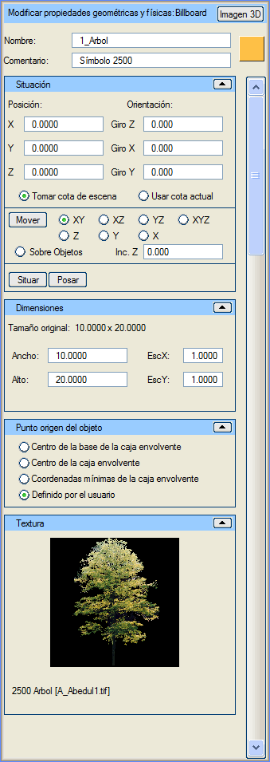
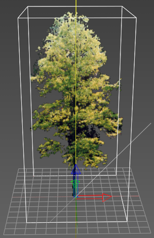

| |
|
Billboard
|
|
Genel Bilgiler Bu menüde, daha önce oluşturulmuş bir Billboard nesnesinin tüm özellikleri ayarlanabilir. Seçenekler İsim: Billboard nesnesini bir isimle tanımlamayı sağlar. Yorum: bu Billboard nesnesine açıklayıcı bir yorum eklemeyi sağlar. 3B Görüntü: bu türde daha fazla Billboard oluşturmak için Billboard (3B görüntüler) oluşturma menüsüne yönlendirir. O menüye girdikten sonra Billboard türü değiştirilebilir. Renk: renk butonu (bu örnekte turuncu) aracılığıyla Billboard için bir renk belirtilebilir. 3B görüntüleyicide dokusuz çizildiğinde bu renkte bir dikdörtgen görünür. Konum (X, Y, Z): Billboard'un tam konumunu belirtir. Yönelim (X dönüşü, Y dönüşü, Z dönüşü): Billboard'un her bir eksen etrafındaki dönüşünü belirtir. Dönüşler Z->X->Y sırasında uygulanır. Z ekseni etrafındaki dönüş (azimut, heading) -400º ile 400º arasında değerler alır. X ekseni etrafındaki dönüş (pitch) -360º ile 360º arasında değerler alır. Y ekseni etrafındaki dönüş (roll) -360º ile 360º arasında değerler alır. Otomatik yönelimli türlerde bu ayar yok sayılır. Sahneden Kot Al: Billboard'u 3B görüntüleyicide taşırken veya yerleştirirken, Billboard'un sahnedeki nesnelerin üzerine oturmasını sağlar. Mevcut Kotu Kullan: Billboard'u 3B görüntüleyicide taşırken veya yerleştirirken, konuma Istram'ın "Mevcut Kotu"na karşılık gelen kot atanır. Taşı (XY, XZ, YZ, X, Y, Z, XYZ, Nesneler Üzerinde): bir Billboard'u 3B ortamda imleç ile sürükleyerek taşımayı sağlayan "taşıma" modunu etkinleştirir. Billboard'un taşınmak istendiği düzlemler kısıtlanabilir. "Nesneler Üzerinde" modu, Billboard'u imlecin hareket ettiği nesnenin yüzeyine yerleştirir. Taşıma modundan "Esc" tuşuna basarak veya bu butona tekrar tıklayarak çıkılır. Z Artımı: Billboard'un yerleştirildiği kota eklenecek bir mesafe tanımlar. Yerleştir: bir Billboard'u imleç ile seçilen belirli bir noktaya yerleştirmeyi sağlar. Yüzeye Oturt: Billboard nesnesinin altındaki "zemine" en iyi şekilde uyum sağlaması için dönüş açılarını yapılandırır. Otomatik yönelimli türlerde bu ayar yok sayılır. Orijinal Boyut: Billboard'un varsayılan olarak tanımlanmış boyutunu bildirir. Boyut (Genişlik, Yükseklik): Billboard'un tam boyutunu belirtmeyi sağlar. Ölçekle (X, Y): önceki seçenekle aynı etkiye sahiptir, ancak boyutu bir çarpım faktörü olarak belirtir. Pivot seçenekleri, kutunun hangi noktasının konum koordinatlarına yerleştirileceğini belirtir. Bu nokta şunlar olabilir: -Sınırlayıcı kutunun taban merkezi. -Sınırlayıcı kutunun merkezi. -Sınırlayıcı kutunun minimum koordinatları. -Kullanıcı tanımlı. Billboard tanımında belirtilmiştir (varsayılan seçenek). Son olarak, kullanılan görüntü ve dosya adı gösterilir. Bu bilgi genellikle daraltılmış (gizlenmiş) olarak bulunur. 
Resimde, menü görselinde tanımlanan Billboard gösterilmektedir. |